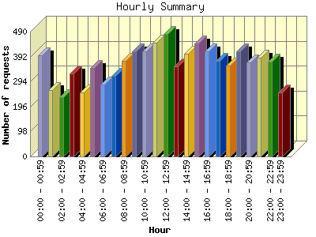
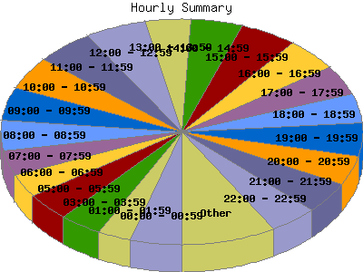

Report generated by Analog 6.0 and Report Magic 2.21
|
Web Server Statistics for "Harish Narayanan (hnarayan) - July 2006" Report generated by Analog 6.0 and Report Magic 2.21 |
The Hourly Summary identifies the level of activity broken down by each hour. Remember that one page hit can result in several server requests as the images for each page are loaded. This summary also compares the level of activity during working hours and after hours as a total for the report time frame.


| Hour | Number of requests | Number of bytes transferred | Percentage of the bytes | Percentage of the requests | |
|---|---|---|---|---|---|
| 1. | 00:00 - 00:59 | 396 | 15.557 MB | 4.27% | 4.57% |
| 2. | 01:00 - 01:59 | 262 | 11.742 MB | 3.22% | 3.02% |
| 3. | 02:00 - 02:59 | 232 | 11.002 MB | 3.02% | 2.68% |
| 4. | 03:00 - 03:59 | 326 | 11.402 MB | 3.13% | 3.76% |
| 5. | 04:00 - 04:59 | 251 | 9.144 MB | 2.51% | 2.90% |
| 6. | 05:00 - 05:59 | 347 | 12.209 MB | 3.35% | 4.00% |
| 7. | 06:00 - 06:59 | 281 | 16.646 MB | 4.57% | 3.24% |
| 8. | 07:00 - 07:59 | 315 | 7.082 MB | 1.94% | 3.63% |
| 9. | 08:00 - 08:59 | 375 | 65.572 MB | 18.00% | 4.33% |
| 10. | 09:00 - 09:59 | 414 | 12.110 MB | 3.33% | 4.78% |
| 11. | 10:00 - 10:59 | 411 | 11.060 MB | 3.04% | 4.74% |
| 12. | 11:00 - 11:59 | 447 | 14.847 MB | 4.08% | 5.16% |
| 13. | 12:00 - 12:59 | 480 | 14.441 MB | 3.96% | 5.54% |
| 14. | 13:00 - 13:59 | 353 | 12.457 MB | 3.42% | 4.07% |
| 15. | 14:00 - 14:59 | 403 | 12.697 MB | 3.49% | 4.65% |
| 16. | 15:00 - 15:59 | 443 | 19.952 MB | 5.48% | 5.11% |
| 17. | 16:00 - 16:59 | 411 | 8.931 MB | 2.45% | 4.74% |
| 18. | 17:00 - 17:59 | 374 | 15.447 MB | 4.24% | 4.32% |
| 19. | 18:00 - 18:59 | 357 | 10.266 MB | 2.82% | 4.12% |
| 20. | 19:00 - 19:59 | 411 | 18.131 MB | 4.98% | 4.74% |
| 21. | 20:00 - 20:59 | 368 | 12.659 MB | 3.48% | 4.25% |
| 22. | 21:00 - 21:59 | 388 | 14.542 MB | 3.99% | 4.48% |
| 23. | 22:00 - 22:59 | 372 | 19.265 MB | 5.29% | 4.29% |
| 24. | 23:00 - 23:59 | 250 | 7.062 MB | 1.94% | 2.88% |
| Work Hours (8:00am-4:59pm) | 3,737 | 172.066 MB | 47.24% | 43.12% | |
| After Hours (5:00pm-7:59am) | 4,930 | 192.156 MB | 52.76% | 56.88% | |
This report was generated on September 9, 2006 16:01.
Report time frame July 1, 2006 00:30 to July 31, 2006 21:33.
| Web statistics report produced by: | |
 Analog 6.0 Analog 6.0 |  Report Magic 2.21 Report Magic 2.21 |